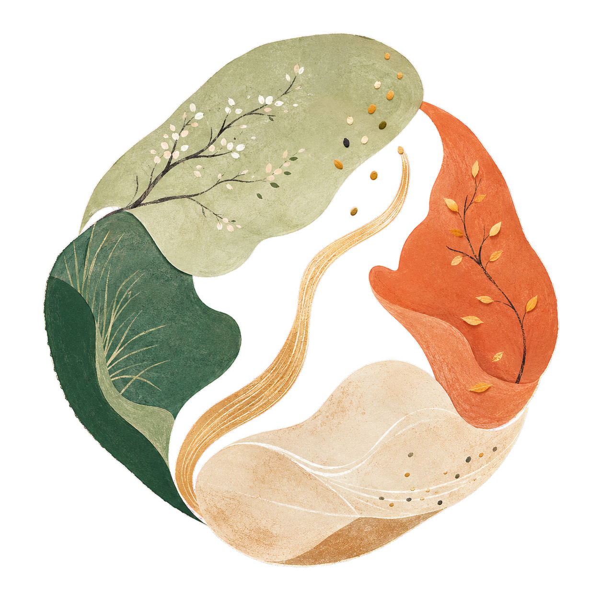

春新芽當令均衡
新食代・新港覺
「新食代・新港覺」團隊由柏熹與宜慧於暑期職場體驗計畫期間共同組成，於新港客廳及新港文教基金會展開「食」作。作為行銷企劃與推廣的一員，我們致力於開創一個高齡友善飲食的新時代，不僅翻轉大眾對於介護食餐的既定印象，更盼「從產地到餐桌」營造煥然一「新」之感。
從企劃的發想與撰寫、餐點的設計與試作、套餐的行銷與推廣；我們將青年創意融合於每一階段當中，亦藉由桌曆版及線上版的指南製作，激發用餐靈感與傳遞友善飲食資訊。希冀透過不同世代的用心品嘗與體會，能化為屬於自己的滋味與感受，讓地方風味成為連結世代的一道橋梁，悠長而美好。

五食成圓・順時共養
主食、主菜、兩道配菜與湯品化為五個柔和形體，共構完整餐盤。枝葉、穀粒與圓潤輪廓呼應當季、在地與柔軟好入口，讓飲食友善走入世代共融的日常。
高齡健康 餐盤指南
高齡飲食的議題一直以來是被社會忽視的一隅，許多長輩在飲食諸多層面上經常是充滿不便。本團隊特以高齡者為設計核心製作此網站指南，提供用餐靈感與健康資訊；期能在健康飲食的道路上，與長輩一同並肩前行。
編製團隊｜新食代・新港覺
吃當季，
吃在地。
從主食、主菜到配菜與湯品，每一道都盛進四季旬味。跟著時節入菜，找尋屬於你的用餐靈感吧！
04季節菜單
12套當令餐盤
夏盛陽當令均衡
秋豐收當令均衡
冬暖藏當令均衡
今天想吃什麼？
主食全年皆可替換；可依牙口、食慾與日常習慣選擇。
我配好的餐盤
AI 餐盤建議
依你配好的餐盤，整理幾個實際吃法。
餐盤建議已加入你的飲食留意項目：
AI 餐盤建議供日常飲食參考；若有慢性病、服藥、限水或吞嚥問題，請依醫師或營養師建議調整。
用餐多留意。
高齡長者用餐時務必加以留心，不僅注意營養是否足夠，更要留意飲食是否安全。
清水和清湯流得快，碎肉泡在湯裡也不好控制，反而可能嗆到。若常嗆咳，請由醫療人員評估適合的軟硬與濃稠度。
肉切薄切小，蔬菜去掉粗梗，再煮到叉子壓得動。保留食物原來的樣子，通常更能引起食慾。
稀飯和清湯水分多，營養較少。可加蛋、豆腐或魚肉；食量小時，先吃豆、魚、蛋、肉，再吃飯和菜。
白粥配醬菜，蛋白質通常不夠。可加一顆蛋、豆腐或無糖豆漿，午餐和晚餐也要吃到豆、魚、蛋或肉。
用吸管時，水可能一下子流太快，來不及吞就嗆到。若曾嗆咳或吞嚥困難，請先詢問醫療人員是否適合使用。
食物若留在兩頰或嘴巴後方，之後仍可能掉進氣管。吃完先看看嘴裡有沒有食物，再刷牙或漱口。
吃完聲音變得濕濕的、常清喉嚨、嘴裡有食物，或一餐吃很久，都可能是吞嚥出了問題。
牙痛、假牙鬆、口乾、便祕、心情或藥物，都可能讓人吃不下。若常吃不完、體重下降或反覆發燒，請儘早就醫。
三高報你知。
高齡長輩若有高血壓、高血糖或高血脂，飲食與烹調需特別注意。以下僅提供一般原則，實際需求仍應依個人狀況，並諮詢醫師或營養師評估。
- 低鈉鹽不是人人適合：腎功能不佳，或使用保鉀利尿劑、部分降血壓與心律藥物者，改用前先詢問醫療人員。
- 真正容易超量的是湯與醬：湯麵、火鍋與滷味以吃料為主，湯汁淺嚐；醬料另外盛裝。
- 吃起來不鹹也可能含鈉：麵線、麵包、加工肉、醃菜、雞粉與味噌都要一起留意。
- 稀不代表澱粉少：粥只是水分較多，一大碗仍可能吃進不少米，份量仍要固定。
- 根莖要和飯互換：南瓜、地瓜、山藥、芋頭、蓮藕、玉米與菱角都屬全穀雜糧；同餐有吃，就把飯減一些。
- 「無糖」仍可能有醣：鮮奶、無糖優格與無加糖穀粉仍含乳糖或澱粉，包裝食品要看總碳水化合物。
- 酥、奶、皮也藏著脂肪：酥皮糕餅、奶精、人造奶油、肥肉與肉皮常含較多飽和脂肪或反式脂肪。
- 三酸甘油脂也受糖影響：甜飲、果汁、糕餅與過量精製澱粉都要留意，不只是少吃油。
- 健康食材要拿來取代：用豆腐、魚與瘦肉換掉肥肉、加工肉，不是在原本餐點上再多加一份。